On this page
Lanka and the places of the Valmiki Ramayana: a data-driven geography (historical edition)
Two editions: this one, and the Treta-Yuga edition (~870,000-year timeline). Compare them on the overview page.
Built 2026-11-11 from GEBCO 2026 bathymetry (15″ grid, 35.7°S–33.9°N, 62.8–94.7°E),
the JPL DE441 planetary ephemeris (13,200 BCE – 1969 CE),
a regional relative-sea-level model, the India-plate rotation pole and the Sanskrit text (IIT Kanpur / RSVP
vulgate, checked against the Baroda Critical Edition). Every number below is recomputed by
scripts/run_all.py.
1. The answer in one table
| Place (Valmiki) | Best-supported identification | Coordinates (WGS84) | Confidence | Text reference (IITK; CE) |
|---|---|---|---|---|
| Lanka (the island) लङ्का द्वीप | Sri Lanka (geographic centre): the only island off the Tamraparni/Pandya coast joined to it by a shoal | 7.8731°N, 80.7718°E | high | 4.41.24-25 (CE 4.40.24-25); 4.58.19-20 (CE 4.57.19-20); 5.2.1 (CE 5.2.1) |
| Setu: Indian end सेतु | Arichal Munai, tip of the Dhanushkodi spit: western end of Adam's Bridge (Rama Setu) | 9.1504°N, 79.4491°E | high | 6.22.61-74 (CE 6.15.8-22); 6.126.19-21 (vulgate only) |
| Setu: Lanka end सेतु | Talaimannar, west tip of Mannar island: eastern end of Adam's Bridge | 9.1055°N, 79.7307°E | high | 6.22.70 (vulgate: 'up to Suvela'; absent CE) |
| Mahendra mountain महेन्द्र | Mahendragiri, Tirunelveli-Kanyakumari border: summit 1,654 m (GEBCO 1,555 m) | 8.3883°N, 77.5214°E | high | 4.41.20-21 (CE 4.40.20-21); 4.67.38-40 (CE 4.66.32-34); 6.4.95-96 (CE 6.4.63-64) |
| Malaya mountain (Agastya's peak) मलय | Agastya Mala (Pothigai), 1,868 m, southern Western Ghats | 8.6163°N, 77.2457°E | high | 4.41.16 (CE 4.40.16); 6.4.97 (CE 6.4.65) |
| Tamraparni river (mouth) ताम्रपर्णी | Thamirabarani river mouth at Punnakayal, Thoothukudi district | 8.6413°N, 78.1273°E | high | 4.41.17-18 (CE 4.40.17-18) |
| Golden gate (kavata) of the Pandyas पाण्ड्यकवाट | Korkai, the early-historic Pandya pearl port near the Thamirabarani mouth (now inland) | 8.6333°N, 78.0667°E | medium | 4.41.19 (CE 4.40.19) |
| Kishkindha किष्किन्धा | Anegundi on the Tungabhadra | 15.3527°N, 76.4919°E | medium | Kishkindha 11-14; 4.27.26 (vulgate) |
| Pampa lake and Matanga's ashram पम्पा | Pampa Sarovar near Hampi / Anegundi | 15.3538°N, 76.4774°E | medium | 3.73.10, 3.73.27-31 (CE 3.69.21-24); 4.1 |
| Panchavati पञ्चवटी | Panchavati, Nashik (Sita Gufa / Kalaram temple) on the Godavari | 20.0067°N, 73.7936°E | medium | 3.13.13, 3.13.21, 3.15.12 (CE 3.12.13, 3.12.18, 3.14.12) |
| Chitrakuta चित्रकूट | Kamadgiri hill, Chitrakoot (Kamta Nath temple); Mandakini at Ramghat | 25.1714°N, 80.8532°E | high | 2.54.28 (CE 2.48.25-26); 2.95.1 (CE 2.89.1) |
| Prayaga (Bharadvaja's ashram) प्रयाग / भरद्वाजाश्रम | Bharadwaj Ashram, Colonelganj, Prayagraj (proxy: Bharadwaj Park); confluence = Triveni Sangam | 25.4575°N, 81.8585°E | high | 2.54.2-8 (CE 2.48.2-8) |
| Shringaverapura शृङ्गवेरपुर | Shringverpur (Singraur), Prayagraj district: excavated site on the Ganga bank | 25.5873°N, 81.6418°E | high | 2.50.25-26 (CE 2.44.1) |
| Ayodhya अयोध्या | Ayodhya, Uttar Pradesh: Ram Janmabhoomi site on the right bank of the Sarayu (Ghaghara) | 26.7956°N, 82.1943°E | high | 1.5.5-6 (CE 1.5.5-6) |
| Lanka city on Trikuta: candidate A त्रिकूटशिखरे लङ्का | Central highlands: Sri Pada (Adam's Peak), fabled as Trikuta; 2,243 m | 6.8094°N, 80.4997°E | low | 5.2.1 (CE 5.2.1); 6.39.18-20 (CE 6.30.18-20) |
| Lanka city on Trikuta: candidate B त्रिकूट / Trikonamalai | Koneswaram on Swami Rock, Trincomalee (GEBCO ~30 m: not a mountain) | 8.5825°N, 81.2456°E | low | 5.2.1; 6.39.18-20 |
| Suvela mountain सुवेल | Not identified by any source; the nearest hills of 300 m or more are ~148 km from the Setu landfall (GEBCO) | not locatable | low | 6.37.36, 6.38.3-18 (CE 6.29.1-17) |
The complete list (51 entries, including Sri Lankan tradition sites, rejected hypotheses and the Treta-Yuga test candidates) is in Section 7 and
in data/valmiki_places.kml (Google Earth), .geojson and .csv. Confidence
reflects how directly the text's clue fits the location, not religious tradition.
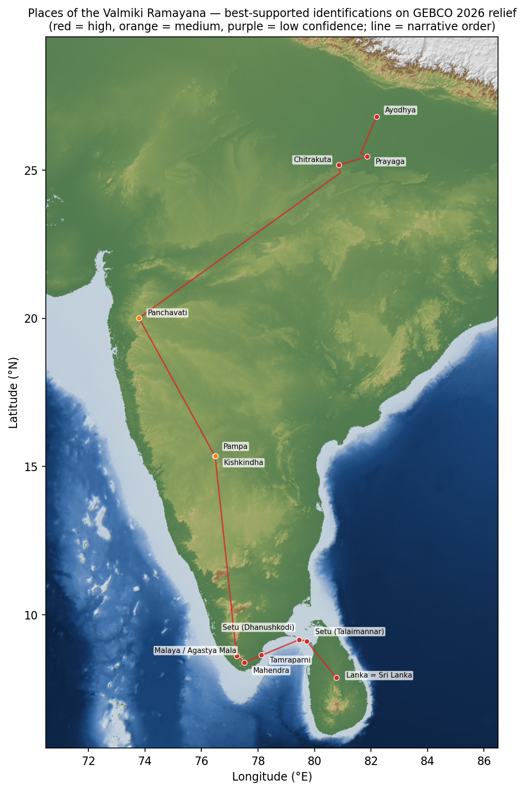
2. What the text constrains, and which layer each clue belongs to
The vulgate (southern recension, IITK numbering) was compared verse by verse with the Critical Edition (CE), the constituted text only, with no apparatus. Clues present in the CE belong to the older layer.
| Clue | Reference | In the Critical Edition? | Constraint it gives |
|---|---|---|---|
| Ayodhya on the Sarayu | 1.5.5-6 (CE 1.5.5-6) | present | Capital of Kosala on the Sarayu bank |
| Shringaverapura on the Ganga | 2.50.25-26 (CE 2.44.1) | present | Ganga crossing point below Kosala |
| Bharadvaja at the Ganga-Yamuna 'sandhi' | 2.54.2-8 (CE 2.48.2-8) | present | The confluence (Prayaga) |
| Chitrakuta '10 krosha' from Prayaga, Mandakini below | 2.54.28, 2.95.1 (CE 2.48.25-26, 2.89.1) | present | A hill with a river at its foot |
| Panchavati 2 yojanas from Agastya, near the Godavari | 3.13.13, 3.13.21 (CE 3.12.13, 3.12.18) | present | Godavari bank |
| Pampa lake; Matanga's ashram on its west bank; Rishyamuka 'in front' | 3.73.27-31 (CE 3.69.21-24) | present | Lake-hill pair in the Tungabhadra country |
| Southern route: Kaveri, Malaya (Agastya), Tamraparni with crocodiles and islands, Pandya golden gate, sea, Mahendra set into the sea, island '100 yojanas long' = Ravana's land | 4.41.15-25 (CE 4.40.15-25) | present | Lanka lies beyond the Tamraparni/Pandya coast, across the sea from a mountain at the shore |
| Beyond the island: Pushpitaka (+100 yojanas), Suryavan (+14), Vaidyuta, Kunjara, Rishabha, Yama's realm | 4.41.28-46 (CE 4.40.27-38) | present | Mythic cosmography: no geography south of Lanka |
| Lanka 'a full 100 yojanas' away across the sea | 4.58.20-25 (CE 4.57.20-23) | present | Sea width = 100 yojanas (formulaic) |
| Sampati's 'Vindhya' on the southern-ocean shore | 4.60.7 (CE 4.59.7) | present | The real Vindhyas are ~800 km from that sea: the southern geography is schematic |
| Hanuman leaps 100 yojanas from Mahendra; Mainaka rises; lands on Mount Lamba; Lanka on Trikuta's summit | 4.67.38-40; 5.1.91-208; 5.2.1 (CE 4.66.32-34; 5.1.79-189; 5.2.1) | present | Launch from a coastal mountain; landing on a hill near Lanka |
| Enters Lanka at dusk as the (near) full moon rises | 5.2.49-58, 5.5.5 (CE 5.2.46-55, 5.4.5) | present | Lunar phase only |
| March at midday 'vijaya' muhurta; Moon in Uttara Phalguni, Hasta tomorrow; Sahya, Malaya, Mahendra, shore | 6.4.3-5, 6.4.72-98 (CE 6.4.3-4, 6.4.55-66) | present | No month or year; route along the Western Ghats to the southern tip |
| Setu 10 yojanas wide, 100 long, built by Nala in mid-ocean from trees and rocks | 6.22.44-74 (CE 6.15.8-22) | present | A long, narrow, shallow crossing: ratio 10 : 1 |
| Day-by-day 14 + 20 + 21 + 22 + 23 yojanas, 'up to Suvela' | 6.22.66-70 | absent | Late addition |
| Suvela: Lanka seen from its summit 'as if hanging in the sky'; full-moon night | 6.37.36, 6.38.3-18 (CE 6.29.1-17) | present | Hill near the landing within sight of the city |
| Rama's horoscope: Caitra, navami, Aditi's nakshatra, five exalted grahas, Cancer lagna, Jupiter with the Moon | 1.18.8-9 | absent (star passage 506*) | Late interpolation; uses the Hellenistic zodiac |
| Month-season pairs: Caitra in bloom; Sravana first rainy month; Kartika campaign; hemanta with the Sun in the south | 2.3.4; 4.26.14-17; 4.28.54-55; 3.16 (CE 2.3.4; 4.25.12-15; 4.27.34-35; 3.15) | present | Precession clock: fixes the epoch of the composer's sky |
| Mercury on Rohini, Mars on Vishakha at Ravana's last battle | 6.103.33-36 (CE 6.90.27-30) | present | Weak planetary constraint |
| Rahu seizes the Sun 'aparvani' (not on a new/full-moon day) before the Khara battle | 3.23.11-12 (CE 3.22.11-12) | present | A portent, not an observable eclipse |
| 'Setubandha' tirtha and Mahadeva's grace at the crossing | 6.126.19-21 | absent | Late (Rameswaram cult) |
3. The astronomical evidence, computed on JPL DE441
Positions are geocentric, daily (hourly near candidates), from JPL DE441, over 13,000 BCE – 1 BCE. The zodiac is sidereal and anchored on Spica = 180° (Lahiri/Chitrapaksha), using the Hipparcos position and proper motion. Taking longitudes relative to Spica cancels precession; the residual from the moving ecliptic is below 0.1°. Checks: the pipeline puts the 585 BCE (Thales) and 763 BCE (Assyrian) solar eclipses on new moons (0.04° and 0.06°), the 7 BCE triple Jupiter–Saturn conjunction on 29/30 May, 1 Oct and 5/6 Dec, and Mesha sankranti 1950 on 13 April.
3.1 Rama's birth horoscope (Bala 1.18.8–9: a late interpolation, absent from the CE)
The text names Caitra, the 9th tithi, Aditi's nakshatra (Punarvasu), "five grahas in exaltation" (unnamed), Cancer lagna, and Jupiter rising with the Moon. Caitra plus the Moon in Punarvasu forces the bright fortnight; Jupiter with the Moon puts both in Cancer, i.e. Punarvasu's 4th quarter (90°–93.3°). These conditions fix the Sun at 342°–357°, late Pisces, so the Sun cannot be exalted (Aries). Mercury never strays more than 27.8° from the Sun in DE441, so it cannot reach Virgo, and the Moon in Cancer is not exalted either. At most four planets can be exalted (Venus, Mars, Jupiter, Saturn). The horoscope as written is internally impossible on any date. The search confirms it: no day in 13,000 years has five.
Days that satisfy everything else (navami, Moon in Punarvasu and Cancer with Jupiter, and Venus, Mars, Jupiter and Saturn all exalted):
| Date (Julian calendar) | JD (TDB) | Exalted | Sun | Moon | Jupiter | Hours with Moon in Cancer |
|---|---|---|---|---|---|---|
| 29 Jan 6266 BCE (Julian cal., astronomical year -6265) | -567205.12 | venus, mars, jupiter, saturn | 350.9° | 90.0° | 90.4° | 6 |
| 10 Feb 4498 BCE (Julian cal., astronomical year -4497) | 78568.96 | venus, mars, jupiter, saturn | 351.7° | 90.2° | 109.8° | 6 |
Sensitivity to the zodiac's zero point (offset from Lahiri):
| Offset | Slow-planet windows | Navami + Punarvasu matches | with ≥5 exalted |
|---|---|---|---|
| -6° | 5 | 1 | 0 |
| -4° | 4 | 2 | 0 |
| -2° | 5 | 2 | 0 |
| +0° | 4 | 2 | 0 |
| +2° | 5 | 1 | 0 |
| +4° | 4 | 0 | 0 |
| +6° | 4 | 0 | 0 |
The commentators' reading (Sun, Mars, Jupiter, Venus, Saturn exalted) plus the Moon in Punarvasu, ignoring the tithi, also occurs, but never on a navami:
| Date | Tithi | Moon | Exalted | Season (sāyana ṛtu) |
|---|---|---|---|---|
| 17 Feb 7120 BCE (Julian cal., astronomical year -7119) | Shukla 6 | Punarvasu | sun, venus, mars, jupiter, saturn | Shishira |
| 01 Mar 5352 BCE (Julian cal., astronomical year -5351) | Shukla 6 | Punarvasu | sun, venus, mars, jupiter, saturn | Shishira |
A widely cited date, 10 January 5114 BCE (P. Bhatnagar 2004), does not reproduce on DE441 under either calendar reading. The run below takes it as a Julian date, local noon at Ayodhya; the Gregorian reading gives Sun in Aries but Jupiter in Leo and Saturn in Scorpio:
| Case | Date | Tithi | Moon | Signs | Exalted |
|---|---|---|---|---|---|
| without ΔT | 10 Jan 5114 BCE (Julian cal., astronomical year -5113) | Shukla 5 | Bharani | sun Aquarius, moon Aries, mercury Capricorn, venus Pisces, mars Aries, jupiter Leo, saturn Scorpio | venus |
| with ΔT | 12 Jan 5114 BCE (Julian cal., astronomical year -5113) | Shukla 7 | Rohini | sun Aquarius, moon Taurus, mercury Capricorn, venus Pisces, mars Aries, jupiter Leo, saturn Scorpio | moon, venus |
3.2 Month–season pairings (present in the CE, the older layer)
Precession slides the lunar months through the seasons by about one month every 2,150 years. Four CE-present pairings were tested: Caitra with groves in bloom (2.3.4); Śrāvaṇa as the first rainy month (CE 4.25.12); Kārtika as the end of the rains (CE 4.25.15); and hemanta with the Sun "firmly in the south" and full-moon nights led by Puṣya (CE 3.15). All four hold together only from about 2951 BCE to the present. Every candidate date older than about 3000 BCE fails all four: 6266, 5114 and 4498 BCE all put Caitra in mid-winter.
| Year (astr.) | Caitra | Sravana | Kartika | Pausa |
|---|---|---|---|---|
| -12208 | ✘ | ✘ | ✘ | ✘ |
| -6265 | ✘ | ✘ | ✘ | ✘ |
| -5113 | ✘ | ✘ | ✘ | ✘ |
| -4497 | ✘ | ✘ | ✘ | ✘ |
| -3000 | ✔ | ✔ | ✘ | ✔ |
| -1500 | ✔ | ✔ | ✔ | ✔ |
| -500 | ✔ | ✔ | ✔ | ✔ |
| 0 | ✔ | ✔ | ✔ | ✔ |
| 500 | ✔ | ✔ | ✔ | ✔ |
3.3 Other sky clues
- Ravana's last battle (CE 6.90.27–30): Mercury on Rohiṇī and Mars on Viśākhā. That sky turns up in
24% of all 16-year windows, so it barely discriminates. Within Rama's adult years
(ages 30–45) of each birth candidate:
Birth candidate Mercury-Rohiṇī + Mars-Viśākhā episodes 6266 BCE (strict A) 09 Apr 6223 BCE (Julian cal., astronomical year -6222) (age 43.3) 4498 BCE (strict B) none 7120 BCE (Sun-in-Aries) none 5352 BCE (Sun-in-Aries) none - Full moon when Hanuman enters Lanka at dusk (CE 5.2.54–55, 5.4.5) and on the night on Suvela (CE 6.29.17). Both are consistent with each other, but with no month or year they cannot be dated.
- Aranya 3.22.11 (CE): Rahu seizes the Sun aparvaṇi, "not on a new- or full-moon day". Real solar eclipses happen only at new moon, so the text marks this as a portent, not an observation.
- Ayodhya 2.4.18–22: "Sun, Mars and Rahu afflict my star". That is Dasharatha's nakshatra, not Rama's. The Moon is in Punarvasu, with Puṣya tomorrow. Undatable without a year.
4. Sea level, the land bridge and the Setu
4.1 The sill
Bisection on the flood level with 4-connected labelling of the GEBCO grid (no diagonal leaks) finds the highest sea level at which a continuous strip of land still joins India and Sri Lanka:
- Adam's Bridge corridor: -3.0 m (the controlling sill);
- northern Palk Strait (Point Calimere–Jaffna): -5.0 m;
- India–Maldives: -2592 m, never land in the Quaternary.
4.2 When did the bridge go under?
Relative sea level (RSL) for the Gulf of Mannar comes from the literature (table below). The sea first rises above the -3.0 m sill at about 7.17 ka BP ≈ 5219 BCE, with a ±1σ range of 5490 BCE – 4954 BCE. The crest today is loose sand 7–9 m thick over calcareous sandstone and conglomerate (Dandabathula et al. 2024). Taking that hard substrate (≈ -10 m) as the sill, the land link breaks at about 5996 BCE (6289 BCE – 5701 BCE). Dubey et al. (2023) reach the same picture independently from seismic profiles: seawater entered the Palk Strait ~8.5 ka, and the strait has not been crossable on foot for ~7,000 years. Before 9 ka the curve follows Lambeck et al. (2014) global ice-equivalent sea level. It then blends into the far-field regional record: modern level reached ~6.5 ka, a highstand of +1.5 to 2 m at 6.5-5.5 cal ka (Ranasinghe et al. 2025, Sri Lanka; Gulf of Mannar corals and microatolls), and a fall to the present after ~4 ka. Regional sea level is assumed to sit 2-3 m above global sea level in the early Holocene because of hydro-isostasy; this is a model assumption, so the uncertainty is widened there.
| Age (ka BP) | RSL (m) | ±1σ | Source |
|---|---|---|---|
| 0.0 | +0.0 | ±0.2 | Present datum |
| 1.0 | +0.1 | ±0.4 | Regional fall after highstand (Ranasinghe et al. 2025; Lambeck et al. 2014 ESL ~0) |
| 2.0 | +0.3 | ±0.5 | Regional fall after highstand (Ranasinghe et al. 2025) |
| 3.0 | +0.5 | ±0.6 | Regional fall after highstand (Ranasinghe et al. 2025; Banerjee 2000) |
| 4.0 | +0.8 | ±0.7 | Gulf of Mannar corals/shells +1.2 to +2.4 m at ~4.4-5.7 14C ka (Banerjee 2000 via Paul 2021) |
| 5.0 | +1.0 | ±0.8 | Gulf of Mannar microatolls +0.7-0.9 m at ~5 ka (JpGU 2026 abstract); Rameswaram Porites +1.2-1.4 m |
| 5.5 | +1.6 | ±0.8 | Southern Sri Lanka highstand peak ~1.6 m at ~5.5 cal ka (Ranasinghe et al. 2025) |
| 6.0 | +1.2 | ±1.0 | Northern Sri Lanka highstand >1.5 m (Ranasinghe et al. 2025); Katupotha 1988/1995 |
| 6.5 | +0.5 | ±1.5 | Modern level reached 6.5-6.25 cal ka in S Sri Lanka; N Sri Lanka >1.5 m by ~6.5 cal ka (Ranasinghe et al. 2025) |
| 7.0 | -1.5 | ±2.0 | Lower Gulf of Mannar microatolls ~7 ka (~2 m below the 5 ka set); Lambeck ESL -5 m + far-field offset |
| 7.5 | -6.0 | ±2.5 | Lambeck et al. 2014 ESL ~-9 m + far-field hydro-isostatic offset ~+3 m (model assumption) |
| 8.0 | -10.5 | ±3.0 | Lambeck et al. 2014 ESL -13 m + offset; Godavari delta -7.5 m at 8.0 cal ka (Nageswara Rao et al. 2015) |
| 8.2 | -12.5 | ±3.0 | Lambeck et al. 2014 ESL ~-15 m + offset |
| 8.5 | -16.5 | ±3.0 | Lambeck et al. 2014 ESL ~-19 m + offset; seawater enters the Palk Strait ~8.5 ka (Dubey et al. 2023) |
| 9.0 | -23.0 | ±4.0 | Lambeck et al. 2014 ESL -25 m + offset |
| 10.0 | -37.0 | ±4.0 | Lambeck et al. 2014 ESL -39 m + offset |
| 11.0 | -52.0 | ±4.0 | Lambeck et al. 2014 ESL -54 m + offset; Godavari delta -43.5 m at 10.9 cal ka |
| 11.5 | -56.5 | ±4.0 | Lambeck et al. 2014 ESL ~-58.5 m (interpolated) |
| 12.0 | -61.0 | ±4.0 | Lambeck et al. 2014 ESL -63 m (Younger Dryas slowdown) |
| 13.0 | -70.0 | ±4.0 | Lambeck et al. 2014 ESL -72 m |
| 14.0 | -84.0 | ±4.0 | Lambeck et al. 2014 ESL -86 m (after Meltwater Pulse 1A) |
| 14.5 | -98.0 | ±5.0 | Lambeck et al. 2014 ESL ~-100 m (onset of MWP-1A) |
| 15.0 | -98.0 | ±6.0 | Lambeck et al. 2014 ESL -100 m |
| 16.5 | -117.0 | ±5.0 | Lambeck et al. 2014 ESL ~-120 m |
| 19.0 | -124.0 | ±5.0 | Lambeck et al. 2014 ESL -126 m |
| 21.0 | -131.0 | ±5.0 | Lambeck et al. 2014 ESL -134 m (LGM); east-coast LGM ~-130 m (Loveson & Nigam 2019) |
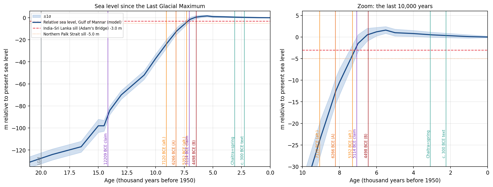
| Epoch | Year | ka BP | RSL (m) | Link, sand-crest sill -3 m | Link, rock sill -10 m |
|---|---|---|---|---|---|
| Last Glacial Maximum | 18,051 BCE | 20.00 | -127.5 ± 5.0 | Land bridge | Land bridge |
| c. 12,209 BCE — published claim (N. Oak 2014) | 12,209 BCE | 14.16 | -88.4 ± 4.3 | Land bridge | Land bridge |
| Start of the Holocene | 9751 BCE | 11.70 | -58.3 ± 4.0 | Land bridge | Land bridge |
| 7120 BCE — DE441 'Sun in Aries' reading | 7120 BCE | 9.07 | -24.0 ± 4.0 | Land bridge | Land bridge |
| 6266 BCE — DE441 strict reading (A) | 6266 BCE | 8.21 | -12.7 ± 3.0 | Land bridge | Threshold (within ±1σ) |
| 5352 BCE — DE441 'Sun in Aries' reading | 5352 BCE | 7.30 | -4.2 ± 2.3 | Threshold (within ±1σ) | Island (5.8 m over the sill) |
| 5114 BCE — published claim (P. Bhatnagar 2004) | 5114 BCE | 7.06 | -2.1 ± 2.1 | Threshold (within ±1σ) | Island (7.9 m over the sill) |
| 4498 BCE — DE441 strict reading (B) | 4498 BCE | 6.45 | +0.6 ± 1.4 | Island (3.6 m over the sill) | Island (10.6 m over the sill) |
| c. 1150 BCE — earliest epoch with Chaitra in spring (Vasanta) | 1150 BCE | 3.10 | +0.5 ± 0.6 | Island (3.5 m over the sill) | Island (10.5 m over the sill) |
| c. 300 BCE — philological composition era | 300 BCE | 2.25 | +0.3 ± 0.5 | Island (3.4 m over the sill) | Island (10.3 m over the sill) |
| Present (GEBCO 2026) | 2026 CE | 0.00 | +0.0 ± 0.2 | Island (3.0 m over the sill) | Island (10.0 m over the sill) |
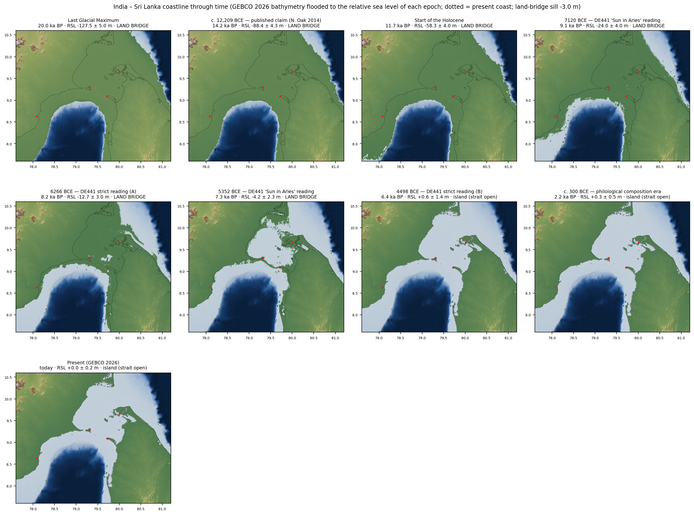
4.3 Shape of the Setu
| Depth cut-off | Gap length (km) | Shoal area (km²) | Mean width (km) | Length : width |
|---|---|---|---|---|
| −3 m | 46.4 | 154 | 3.3 | 14.0 |
| −4 m | 46.2 | 222 | 4.8 | 9.6 |
| −5 m | 46.2 | 377 | 8.2 | 5.7 |
| −6 m | 46.0 | 558 | 12.1 | 3.8 |
| −8 m | 46.0 | 978 | 21.3 | 2.2 |
| −10 m | 46.0 | 1271 | 27.6 | 1.7 |
| −15 m | 46.0 | 1754 | 38.1 | 1.2 |
The shortest path along the crest runs 46.4 km from the Rameswaram island shore to Mannar island; tip to tip, Arichal Munai to Mannar, is 32.4 km. No crest cell is deeper than 3 m. Valmiki's 100 × 10 yojanas (CE 6.15.20) is a ratio of 10. GEBCO gives 9.6 at the −4 m isobath, ranging from 14 at −3 m to 1.2 at −15 m. The match is real but depends on the isobath chosen. Treat it as consistent, not as proof of design.
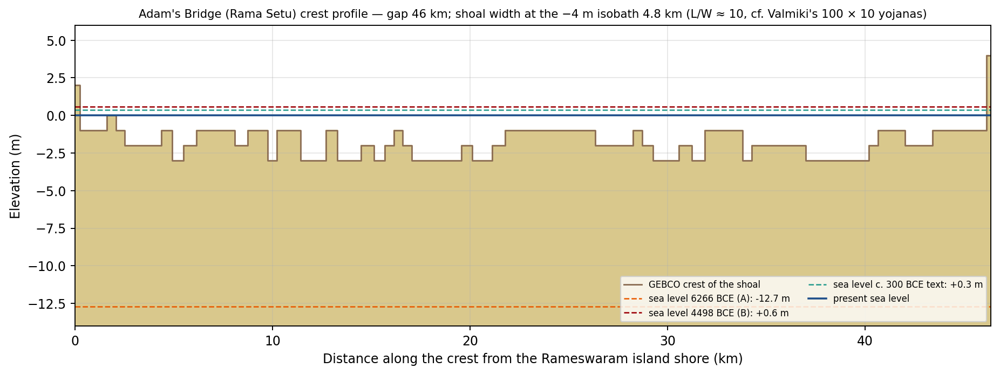
5. Testing the Lanka hypotheses against the text
| Test (text) | Sri Lanka | Maldives | Equator × Ujjain meridian | Amarkantak (central India) |
|---|---|---|---|---|
| Island across the southern sea beyond Mahendra and the Tamraparni (CE 4.40.17–25) | ✔ | ✔ (SW) | ✘ open ocean | ✘ landlocked |
| Sea gap bridgeable by a causeway (CE 6.15) | ✔ 46 km of 0–3 m shoal | ✘ sill -2592 m | ✘ -4128 m deep | ✘ no sea |
| Setu ratio 10 : 1 (CE 6.15.20) | ✔ 9.6 at −4 m | ✘ | ✘ | ✘ |
| A mountain (Trikuta) on the island (CE 5.2.1) | ✔ highlands to 2,524 m | ✘ atolls, < 3 m today | ✘ | ✔ (but no sea) |
| Island at the text's epoch (CE month–season layer ≥ 3000 BCE) | ✔ island since ~5219 BCE | ✔ but sill km-deep | ✘ never land | ✘ |
| '100 yojanas' away | ✔ with a 2.4-km yojana from Mahendragiri | ✔ with an ~8-km yojana | ✔ with ~10 km | — |
The equatorial "Lanka" of the Surya Siddhanta is a reference point of Indian astronomy, the place where the prime meridian through Ujjain meets the equator. GEBCO puts it under -4128 m of water; the nearest seabed that was ever dry (shallower than −130 m) lies 247 km away in the Maldives. The Maldives were large exposed limestone plateaus only below about −40 m sea level (20,794 km² against 1,151 km² today). At those sea levels (> ~10 ka) Sri Lanka was itself joined to India by land.
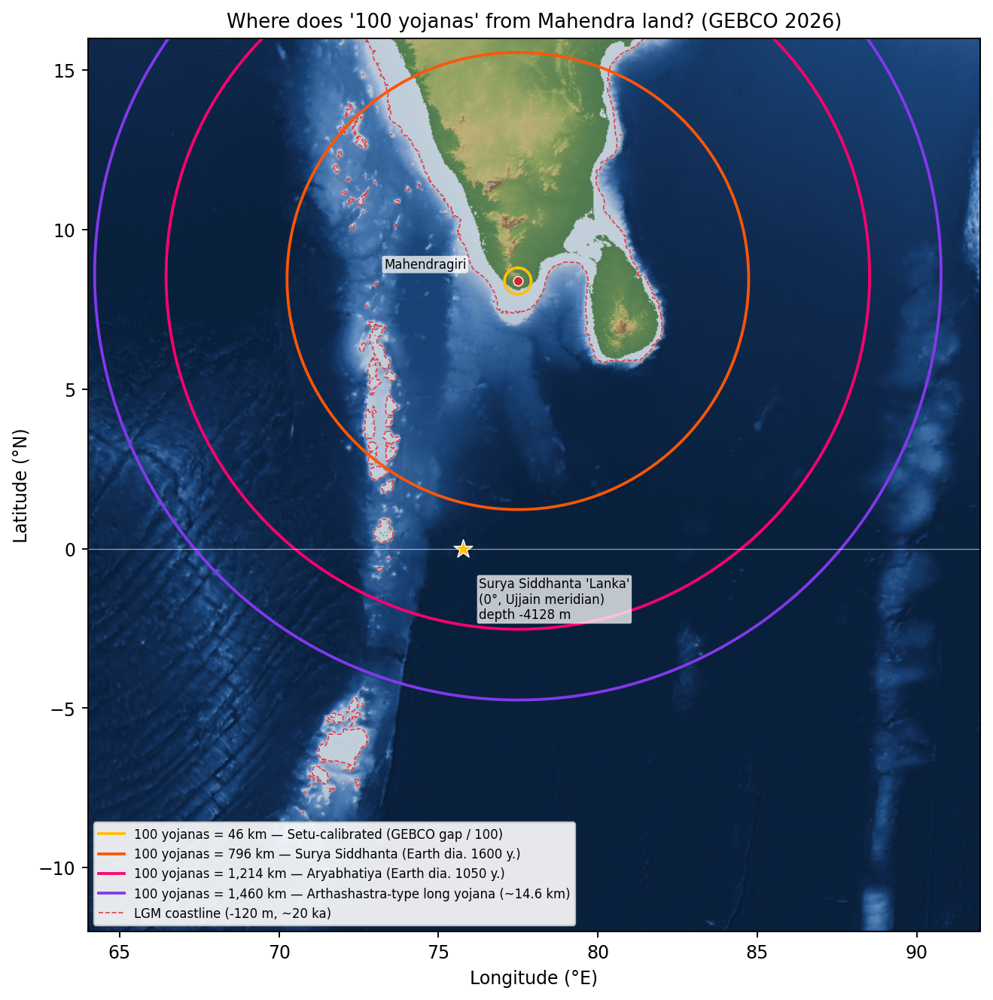
Valmiki's distances against the map
| Clue | Text | Stated | Measured (km) | Implied km per unit |
|---|---|---|---|---|
| Prayaga to Chitrakuta | 2.54.28 (CE 2.48.25) | 10 krosha | 105.9 | 10.59 per krosha |
| Agastya's ashram (Akole) to Panchavati | 3.13.13 (CE 3.12.13) | 2 yojanas | 55.4 | 27.69 per yojana |
| Mahendragiri to the Sri Lankan coast (Hanuman's leap) | 4.58.20; 5.1.200 (CE 4.57.20; 5.1.182) | 100 yojanas | 244.3 | 2.44 per yojana |
| Setu: Dhanushkodi tip to Mannar island | 6.22.74 (CE 6.15.20) | 100 yojanas long | 32.4 | 0.32 per yojana |
| Setu width (shoal at the -4 m isobath) | 6.22.74 (CE 6.15.20) | 10 yojanas wide | 4.8 | 0.48 per yojana |
| Length of the island of Lanka (Sri Lanka, Point Pedro to Dondra Head) | 4.41.24 (CE 4.40.24) | 100 yojanas long | 437.0 | 4.37 per yojana |
The implied yojana ranges more than 80-fold, so no single unit fits. The 100s are the poem's formula for "a great distance". Rishyamuka lies at a bearing of 218° (south-west) from Pampa Sarovar, while the text puts it purastāt, in front of or east of Pampa.
Line of sight
With standard refraction, no Sri Lankan terrain of 100 m or more is above the horizon from the Setu landfall at Talaimannar (eye 10–30 m), from Rameswaram, or from Mahendragiri's 1,555 m summit. The nearest summit of 300 m or more is 148 km inland. So "Lanka seen on Trikuta" from Lamba or Suvela near the landing (CE 5.2.1, 6.29.13) cannot be literal for any Sri Lankan city.
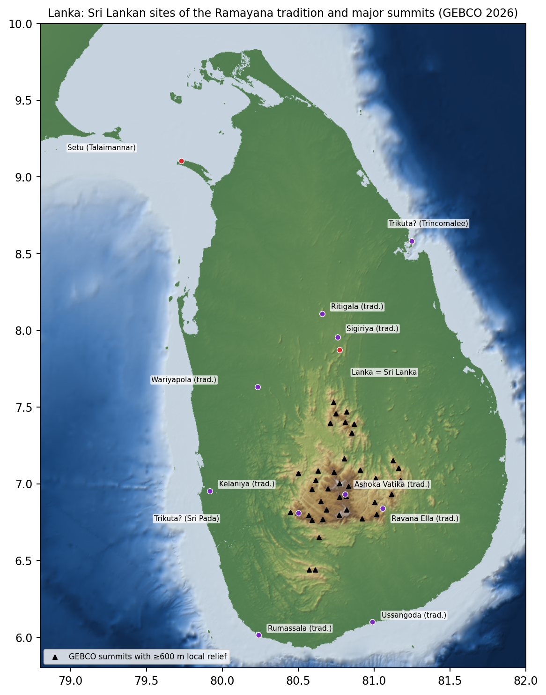
6. Rivers, coasts and tectonics
6.1 Plate motion
India-plate pole NNR-MORVEL56 (Argus, Gordon & DeMets 2011): 50.37°N, 3.29°W, 0.544 ± 0.010°/Myr. GNSS agrees: 54.8 mm/yr toward 050° at Bangalore and 56.9 mm/yr toward 051° at Colombo. The Bangalore-Colombo baseline changes by only -0.02 ± 0.28 mm/yr, so India and Sri Lanka move as one rigid block (Jade et al. 2017). Vertical rates are within ±0.5 mm/yr, and last-interglacial corals at only +0.8 to 3.6 m in the Palk Strait argue against significant uplift. At the Setu landfall the India plate moves 59 mm/yr toward 50°, about 492 m since the oldest reference epoch. All the sites ride the same plate, so their positions relative to each other have not changed. Horizontal tectonics therefore does not move any identification; it matters only against fixed references such as the equator. Each site's epoch position is in the KML and GeoJSON.
6.2 River and shoreline shifts
| Place | Shift | Effect on the coordinate | Source |
|---|---|---|---|
| Ayodhya / Sarayu (Ghaghara) | Bank shifts of 4-7 km within the meander belt in 1975-2020; right-bank erosion near Ayodhya ~5 km in 1990-2003 | The town stands on a stable Pleistocene upland (T2, ~48-7 ka), so the site coordinate is robust. Where the river ran in Valmiki's time is uncertain by about ±5-7 km | NIH Roorkee for CWC 2013; Gautam et al. 2024 (doi:10.1007/s12517-024-12104-1); Shah 2017 (doi:10.1007/s13201-016-0459-3) |
| Shringaverapura / Ganga | No shift documented; site still on the left bank; a ~2,000-yr-old brick tank fed by Ganga water; OCP levels TL-dated 1035-875 BCE | Coordinate stable | Agrawal, Bhandari, Lal & Singhvi 1981 (doi:10.1007/BF02880261); B. B. Lal 1985 |
| Prayaga / Ganga-Yamuna confluence | The Ganga moved west toward the fort in 1975-2000; the confluence point moves with the seasons | The 'sandhi' point is good to roughly ±1-2 km (not quantified in peer-reviewed work) | Press reports of IIT Kanpur imagery; Pati et al. 2008 (doi:10.1007/s12524-008-0030-2, not read) |
| Panchavati / Godavari at Nashik | Bedrock (Deccan basalt) channel, incising through the Holocene; knickpoint at Gangapur | Channel stable at site scale | Kale & Rajaguru 1987 (doi:10.1038/325612a0); Kale 2002 |
| Pampa / Tungabhadra at Hampi | Granite-bedrock channel; 14th-century bridge pillars and Vijayanagara anicuts still in place | Channel stable at site scale | UNESCO WHS record; field evidence (no numerical study) |
| Tamraparni mouth / Korkai | The delta has prograded 7.5-8 km in ~2,000 years and the river shifted south and east. Korkai was the port from the 3rd century BCE to the 5th century CE | In the 1st millennium BCE the mouth and coast lay near Korkai (8.633°N, 78.067°E), about 7.5 km west of today's mouth | Arunachalam, Sukumar et al. 2006, Curr. Sci. 91:278 |
| Setu, Indian end / Dhanushkodi spit | Sand spit up to +3.5 m, mobile; the town was destroyed by the 1964 cyclone (surge 4.5-7.6 m); the cays are loose sand 7-9 m thick over calcareous sandstone | During the +1.5-2 m mid-Holocene highstand (6.5-5.5 ka) most of the spit and cays were awash, so the dry Indian end was the Rameswaram island core (~79.34°E). Today's tip is 12 km further east | Paul 2021, J. Indian Geomorph. 9:18; Dandabathula et al. 2024 (doi:10.1038/s41598-024-65908-2); IMD 1964 |
| Kaveri mouth / Poompuhar (context) | Sangam-era structures now in 1-8 m of water; shoreline retreat ~1 m/yr at Tranquebar | Coastal sites of the historic period have shifted by hundreds of metres to kilometres | Sundaresh & Gaur 2011 (NIO) |
7. All places
| Place | Reference (IITK; CE) | Text clue | Identification | Coordinates | GEBCO elev (m) | Conf. | Through time (sea distance by epoch; river/coast shift) | Coordinate source |
|---|---|---|---|---|---|---|---|---|
| Ayodhya अयोध्या | 1.5.5-6 (CE 1.5.5-6) | Capital of Kosala, a great country on the bank of the Sarayu | Ayodhya, Uttar Pradesh: Ram Janmabhoomi site on the right bank of the Sarayu (Ghaghara) | 26.7956°N, 82.1943°E | 105.0 | high | Town on a stable Pleistocene upland; the Sarayu (Ghaghara) channel swings 4-7 km within its meander belt, so the river bank of Valmiki's time is uncertain by about ±5-7 km | Wikipedia (Ram Mandir); OSM polygon 26.7939, 82.1942 |
| Shringaverapura शृङ्गवेरपुर | 2.50.25-26 (CE 2.44.1) | Guha's town on the Ganga where Rama crossed the river | Shringverpur (Singraur), Prayagraj district: excavated site on the Ganga bank | 25.5873°N, 81.6418°E | 94.0 | high | No river shift documented: still on the Ganga's left bank; occupation TL-dated from c. 1035-875 BCE | Wikipedia; OSM Shri Ram Ghat 25.5895, 81.6394 |
| Prayaga (Bharadvaja's ashram) प्रयाग / भरद्वाजाश्रम | 2.54.2-8 (CE 2.48.2-8) | Bharadvaja's hermitage at the joining (sandhi) of the Ganga and Yamuna, reached by evening | Bharadwaj Ashram, Colonelganj, Prayagraj (proxy: Bharadwaj Park); confluence = Triveni Sangam | 25.4575°N, 81.8585°E | 93.0 | high | The confluence point moves seasonally and the Ganga moved west toward the fort in 1975-2000; the 'sandhi' is good to about ±1-2 km | OpenStreetMap (Bharadwaj Park, proxy); Sangam OpenStreetMap 25.4222, 81.8923 |
| Chitrakuta चित्रकूट | 2.54.28 (CE 2.48.25-26); 2.95.1 (CE 2.89.1) | Hill 'ten krosha from here' (Prayaga) with the Mandakini river below it | Kamadgiri hill, Chitrakoot (Kamta Nath temple); Mandakini at Ramghat | 25.1714°N, 80.8532°E | 177.0 | high | OpenStreetMap (Kamta Nath Mandir) | |
| Atri and Anasuya's ashram अत्र्याश्रम | Ayodhya 117-119 (vulgate) | Hermitage of Atri and Anasuya after leaving Chitrakuta | Sati Anusuya ashram, Chitrakoot | 25.0733°N, 80.8674°E | 198.0 | medium | OpenStreetMap | |
| Sharabhanga's ashram शरभङ्गाश्रम | Aranya 5 (vulgate) | Hermitage in the Dandaka forest | Sarbhanga Ashram village, Satna district (village-centre proxy) | 24.9114°N, 80.9246°E | 389.0 | low | OpenStreetMap (village boundary centre) | |
| Panchavati पञ्चवटी | 3.13.13, 3.13.21, 3.15.12 (CE 3.12.13, 3.12.18, 3.14.12) | Two yojanas from Agastya's ashram, near the Godavari, by a madhuka forest and a hill | Panchavati, Nashik (Sita Gufa / Kalaram temple) on the Godavari | 20.0067°N, 73.7936°E | 568.0 | medium | Godavari incised in Deccan basalt at Nashik: channel stable at site scale | OpenStreetMap |
| Agastya's ashram (north) अगस्त्याश्रम | 3.11-13 (CE 3.11-12) | Two yojanas from Panchavati | Agasti temple, Akole, on the Pravara (tradition only) | 19.5490°N, 74.0023°E | 576.0 | low | OpenStreetMap | |
| Janasthana जनस्थान | Aranya 18-30 | Khara's district around Panchavati | Nashik region (no specific site; city centre as stand-in) | 19.9975°N, 73.7898°E | 585.0 | low | Wikipedia (Nashik) | |
| Pampa lake and Matanga's ashram पम्पा | 3.73.10, 3.73.27-31 (CE 3.69.21-24); 4.1 | Lake reached travelling west from Kabandha; Matanga's ashram on its west bank; Rishyamuka 'in front of' it | Pampa Sarovar near Hampi / Anegundi | 15.3538°N, 76.4774°E | 424.0 | medium | Tungabhadra in a granite-bedrock gorge: stable at site scale | Wikipedia; OSM 15.3537, 76.4775 |
| Rishyamuka hill ऋष्यमूक | 3.73.31 (CE 3.69.24); Kishkindha 1-5 | Sugriva's refuge hill near Pampa | Rishyamukha hill across the Tungabhadra from Hampi | 15.3408°N, 76.4667°E | 427.0 | medium | OpenStreetMap | |
| Kishkindha किष्किन्धा | Kishkindha 11-14; 4.27.26 (vulgate) | Vali and Sugriva's cave-city near Rishyamuka and Prasravana | Anegundi on the Tungabhadra | 15.3527°N, 76.4919°E | 415.0 | medium | Tungabhadra in a granite-bedrock gorge: stable at site scale | Wikipedia |
| Prasravana hill on Malyavat प्रस्रवण / माल्यवत् | 4.27.1, 4.28.1 (CE 4.26.1, 4.27.1) | Rama's monsoon camp on the back of Malyavat, not far from Kishkindha | Malyavanta Raghunatha temple hill, Hampi | 15.3245°N, 76.4878°E | 451.0 | medium | OpenStreetMap | |
| Malaya mountain (Agastya's peak) मलय | 4.41.16 (CE 4.40.16); 6.4.97 (CE 6.4.65) | Agastya seated on the summit of Malaya, south of the Kaveri, before the Tamraparni | Agastya Mala (Pothigai), 1,868 m, southern Western Ghats | 8.6163°N, 77.2457°E | 1453.0 | high | Wikipedia | |
| Tamraparni river (mouth) ताम्रपर्णी | 4.41.17-18 (CE 4.40.17-18) | Great river with crocodiles, island-studded, entering the sea; crossed after Malaya | Thamirabarani river mouth at Punnakayal, Thoothukudi district | 8.6413°N, 78.1273°E | -4.0 | high | 6266 BCE (A): 6.39 km; 4498 BCE (B): 0.19 km; c. 300 BCE text: 0.19 km; present: 0.19 km Delta prograded 7.5-8 km in ~2,000 yr. In the 1st millennium BCE the mouth was near Korkai, about 7.5 km west of today's (epoch coordinate 8.633°N, 78.067°E) | Wikipedia |
| Golden gate (kavata) of the Pandyas पाण्ड्यकवाट | 4.41.19 (CE 4.40.19) | Golden pearl-studded gate of the Pandyas, after the Tamraparni and before the sea | Korkai, the early-historic Pandya pearl port near the Thamirabarani mouth (now inland) | 8.6333°N, 78.0667°E | 9.0 | medium | 6266 BCE (A): 13.05 km; 4498 BCE (B): 6.67 km; c. 300 BCE text: 6.67 km; present: 6.67 km Korkai was a coastal pearl port from the 3rd century BCE to the 5th century CE; now about 7.5 km inland | Wikipedia (arc-minute precision) |
| Mahendra mountain महेन्द्र | 4.41.20-21 (CE 4.40.20-21); 4.67.38-40 (CE 4.66.32-34); 6.4.95-96 (CE 6.4.63-64) | Set by Agastya at the sea, 'plunging into the ocean'; Hanuman's launch point; Rama climbs it and sees the sea | Mahendragiri, Tirunelveli-Kanyakumari border: summit 1,654 m (GEBCO 1,555 m) | 8.3883°N, 77.5214°E | 1208.0 | high | Wikipedia | |
| Southern ocean shore (army camp) दक्षिणसमुद्रतीर | 4.64.4 (CE 4.63.4); 6.4.97-98 | The army reaches the shore forest (velavana) of the southern ocean after Mahendra | Kanyakumari (Cape Comorin), the shore nearest Mahendragiri | 8.0780°N, 77.5505°E | 10.0 | medium | 6266 BCE (A): 1.5 km; 4498 BCE (B): 0.59 km; c. 300 BCE text: 0.59 km; present: 0.59 km Rocky cape: shoreline essentially fixed through the Holocene (GEBCO: <1 km change between -10 m and +1.5 m) | OpenStreetMap (cape tip) |
| Setu: Indian end सेतु | 6.22.61-74 (CE 6.15.8-22); 6.126.19-21 (vulgate only) | Causeway 100 yojanas long and 10 wide built by Nala 'in the middle of the ocean' | Arichal Munai, tip of the Dhanushkodi spit: western end of Adam's Bridge (Rama Setu) | 9.1504°N, 79.4491°E | -2.0 | high | 6266 BCE (A): 6.72 km; 4498 BCE (B): 0.23 km; c. 300 BCE text: 0.23 km; present: 0.23 km Spit and cays are mobile sand up to +3.5 m. During the +1.5-2 m highstand (6.5-5.5 ka) they were mostly awash, so the dry Indian end was the Rameswaram island core near 9.227°N, 79.340°E | OpenStreetMap (road-end monument; spit tip migrates) |
| Setu: Lanka end सेतु | 6.22.70 (vulgate: 'up to Suvela'; absent CE) | The causeway reaches the far shore | Talaimannar, west tip of Mannar island: eastern end of Adam's Bridge | 9.1055°N, 79.7307°E | -3.0 | high | 6266 BCE (A): 17.9 km; 4498 BCE (B): 0.1 km; c. 300 BCE text: 0.1 km; present: 0.1 km Mannar island is a low sand-and-reef island; its west tip migrates with the littoral drift | OpenStreetMap; pier 9.1087, 79.7303 |
| Lanka (the island) लङ्का द्वीप | 4.41.24-25 (CE 4.40.24-25); 4.58.19-20 (CE 4.57.19-20); 5.2.1 (CE 5.2.1) | Island beyond Mahendra across the southern ocean, 'a full 100 yojanas' away, itself '100 yojanas long' | Sri Lanka (geographic centre): the only island off the Tamraparni/Pandya coast joined to it by a shoal | 7.8731°N, 80.7718°E | 234.0 | high | Joined to India by land until sea level rose above the bridge sill (crest ~-3 m: c. 5200 BCE; rock ~-10 m: c. 6000 BCE) | Sri Lanka centroid (Wikipedia) |
| Lanka city on Trikuta: candidate A त्रिकूटशिखरे लङ्का | 5.2.1 (CE 5.2.1); 6.39.18-20 (CE 6.30.18-20) | City on the summit of Trikuta, seen from Suvela 'as if hanging in the sky' | Central highlands: Sri Pada (Adam's Peak), fabled as Trikuta; 2,243 m | 6.8094°N, 80.4997°E | 2023.0 | low | Wikipedia | |
| Lanka city on Trikuta: candidate B त्रिकूट / Trikonamalai | 5.2.1; 6.39.18-20 | Name-based link Trikuta ~ Tiru-kona-malai | Koneswaram on Swami Rock, Trincomalee (GEBCO ~30 m: not a mountain) | 8.5825°N, 81.2456°E | -12.0 | low | 6266 BCE (A): 0.29 km; 4498 BCE (B): 0.25 km; c. 300 BCE text: 0.25 km; present: 0.25 km | Wikipedia |
| Lamba peak (Hanuman's landing) लम्ब | 5.1.208 (CE 5.1.189) | Hanuman lands on a peak of Mount Lamba, with ketaka, uddalaka and coconut trees | Not identifiable: no Sri Lankan terrain of 100 m or more is in line of sight from the Setu landfall (GEBCO) | not locatable | low | - | ||
| Suvela mountain सुवेल | 6.37.36, 6.38.3-18 (CE 6.29.1-17) | Rama's first camp in Lanka; Lanka visible from its summit; a full-moon night | Not identified by any source; the nearest hills of 300 m or more are ~148 km from the Setu landfall (GEBCO) | not locatable | low | - | ||
| Ashoka Vatika tradition: Seetha Amman temple (tradition) | (post-Valmiki local tradition) | Sri Lankan Ramayana-trail tradition | Ashoka Vatika tradition: Seetha Amman temple: Sita Eliya / Hakgala | 6.9332°N, 80.8105°E | 1800.0 | low | Wikipedia | |
| Ravana Ella falls / cave tradition (tradition) | (post-Valmiki local tradition) | Sri Lankan Ramayana-trail tradition | Ravana Ella falls / cave tradition: Ella | 6.8408°N, 81.0544°E | 860.0 | low | Wikipedia | |
| Vibhishana tradition: Kelaniya Raja Maha Vihara (tradition) | (post-Valmiki local tradition) | Sri Lankan Ramayana-trail tradition | Vibhishana tradition: Kelaniya Raja Maha Vihara: near Colombo | 6.9531°N, 79.9185°E | 11.0 | low | Wikipedia | |
| Ritigala (Sanjivani tradition) (tradition) | (post-Valmiki local tradition) | Sri Lankan Ramayana-trail tradition | Ritigala (Sanjivani tradition): 766 m isolated massif | 8.1090°N, 80.6568°E | 658.0 | low | OpenStreetMap | |
| Sigiriya (Ravana-palace folk tradition) (tradition) | (post-Valmiki local tradition) | Sri Lankan Ramayana-trail tradition | Sigiriya (Ravana-palace folk tradition): 5th-century CE fortress | 7.9569°N, 80.7597°E | 235.0 | low | Wikipedia | |
| Ussangoda (Hanuman-fire tradition) (tradition) | (post-Valmiki local tradition) | Sri Lankan Ramayana-trail tradition | Ussangoda (Hanuman-fire tradition): south coast | 6.1000°N, 80.9894°E | 16.0 | low | Wikipedia | |
| Rumassala (Sanjivani tradition) (tradition) | (post-Valmiki local tradition) | Sri Lankan Ramayana-trail tradition | Rumassala (Sanjivani tradition): Galle | 6.0153°N, 80.2386°E | 26.0 | low | OpenStreetMap | |
| Wariyapola (Pushpaka airfield tradition) (tradition) | (post-Valmiki local tradition) | Sri Lankan Ramayana-trail tradition | Wariyapola (Pushpaka airfield tradition): Kurunegala | 7.6333°N, 80.2333°E | 87.0 | low | Wikipedia | |
| Surya Siddhanta 'Lanka' (equator on Ujjain's meridian) (rejected) लङ्का (सिद्धान्त) | (astronomical convention, not Valmiki) | Zero point of Indian astronomy: equator on the meridian of Ujjain | Open ocean, 4,128 m deep (GEBCO): never land at any Quaternary sea level | 0.0000°N, 75.7665°E | -4129.0 | low | Derived: Ujjain Jantar Mantar longitude (Wikipedia) | |
| Maldives hypothesis (rejected) | - | Proposed on long-yojana distance readings | Male atoll: separated from India by a 2,592 m deep sill (GEBCO) | 4.1750°N, 73.5090°E | -58.0 | low | Wikipedia (Male) | |
| Central-India hypothesis (M. V. Kibe) (rejected) | - | Lanka at the Narmada source in the Amarkantak hills | Amarkantak plateau: landlocked, ~700 km from the sea | 22.6733°N, 81.7595°E | 1042.0 | low | Wikipedia | |
| Equator x Ujjain meridian at the Puranic end of Treta (~869 ka) (rejected) लङ्का (त्रेता) | (astronomical convention; Surya Siddhanta) | Lanka placed where Ujjain's meridian meets the equator | Today's location of that point after India-plate motion since 869 ka: open ocean, 4,308 m deep (GEBCO) | 0.2959°N, 75.7911°E | -4308.0 | low | Computed: NNR-MORVEL56 rotation of (0°, Ujjain's then-longitude) | |
| Equatorial ridge candidate A: Huvadhu atoll plateau | Treta hypothesis (equatorial Lanka on the Chagos-Laccadive ridge) | Largest land within 300 km of the equator at the Treta sea level (-90 m) | Huvadhu atoll (Maldives) as an exposed limestone plateau: 3,737 km2, ~216 m above the Treta sea; 949 km from Mahendragiri (100 yojanas at 9.5 km); 2,286 m-deep sill to India | 0.5190°N, 73.2830°E | -24.0 | low | Computed from GEBCO 2026 at -90 m (centroid) | |
| Equatorial ridge candidate B: Fuvahmulah plateau | Treta hypothesis | Second equatorial landmass at the Treta sea level | Fuvahmulah (Maldives): 39 km2, ~109 m above the Treta sea; 1,065 km from Mahendragiri; channel to Huvadhu 1,995 m deep | 0.3070°S, 73.4330°E | -7.0 | low | Computed from GEBCO 2026 at -90 m (centroid) | |
| Equatorial ridge candidate C: Addu atoll plateau | Treta hypothesis | Third equatorial landmass at the Treta sea level | Addu atoll (Maldives): 206 km2, ~151 m above the Treta sea; 1,104 km from Mahendragiri; channel to Fuvahmulah 1,901 m deep | 0.6360°S, 73.1610°E | -28.0 | low | Computed from GEBCO 2026 at -90 m (centroid) | |
| Drowned island: Great Chagos Bank | Treta / glacial-era land (chagos_scan.py) | Land at -90 m that is now reef and lagoon | ~14,550 km2 limestone island at the Treta sea level (-90 m); reduced to reef ~10-8 ka by post-glacial sea-level rise; 5.6 km2 of islets today | 6.2000°S, 71.9000°E | -66.0 | low | Computed from GEBCO 2026 (bank centroid region) | |
| Drowned island: Pitt Bank | Treta / glacial-era land (chagos_scan.py) | Land at -90 m that is now wholly submerged | ~2,180 km2 at -90 m; drowned ~7.3 ka; no land today | 7.0500°S, 71.3300°E | -22.0 | low | Computed from GEBCO 2026 | |
| Drowned island: Speakers Bank | Treta / glacial-era land (chagos_scan.py) | Land at -90 m that is now submerged | ~980 km2 at -90 m; drowned ~8.1 ka; negligible land today | 4.8800°S, 72.3300°E | -21.0 | low | Computed from GEBCO 2026 | |
| Near-circular abyssal basin (unexplained in GEBCO) | Bathymetric anomaly (chagos_scan.py) | Closed, near-circular basin with a slightly raised margin | ~2,000 km2, 466 m deep below its rim at ~4,000 m depth; margin +32 m; needs a ship survey (GEBCO here is gravity-interpolated) | 0.3730°N, 70.2070°E | -4235.0 | low | Computed from GEBCO 2026 | |
| Near-circular abyssal basin (unexplained in GEBCO) | Bathymetric anomaly (chagos_scan.py) | Closed, near-circular basin with a slightly raised margin | ~1,600 km2, 459 m deep below its rim at ~4,100 m depth; margin +75 m; needs a ship survey | 1.0560°N, 70.2920°E | -4195.0 | low | Computed from GEBCO 2026 | |
| Kumari Kandam test: Wadge Bank shelf south of Kanyakumari குமரிக்கண்டம் | (Tamil tradition of lands lost south of Kumari) | Land said to have stretched south of Kanyakumari before the sea took it | Real drowned land: ~8,600 km2 of shelf south of Kanyakumari was dry at the Treta sea level (-90 m), reaching only to ~7.4 N; beyond it the sea floor falls to 2,400 m at 6 N and 4,800 m at the equator (GEBCO) | 7.6000°N, 77.4000°E | -77.0 | low | Computed from GEBCO 2026 (shelf centre) | |
| Drowned plain of the Palk Bay | Treta / glacial-era land | Dry land joining India and Sri Lanka at low sea level | ~26,000 km2 of plain between India and Sri Lanka, dry whenever the sea stood more than ~10 m below today | 9.6000°N, 79.5500°E | -6.0 | low | Computed from GEBCO 2026 | |
| Mauritius (tested as Lanka) (rejected) | (modern proposal; not in Valmiki) | Island proposed by some as Lanka | Volcanic island < 9 Myr old over the buried microcontinent 'Mauritia'; 20 S, 3,804 km from Mahendragiri (100 yojanas = 38 km each); the three-peaked Trois Mamelles is a coincidence of shape | 20.2000°S, 57.5500°E | outside grid | low | Wikipedia (Mauritius) | |
| Reunion (Mascarene hotspot island) | (context) | Active hotspot volcano of the Mascarenes | Summit 3,070 m; 4,039 km from Mahendragiri; barely larger at the Treta sea level | 21.1200°S, 55.5300°E | outside grid | low | Wikipedia (Reunion) | |
| Drowned island: Saya de Malha Bank | Treta / glacial-era land | Bank that was a large island at low sea level | ~18,500 km2 of land at the Treta sea level (-90 m), ~29,000 km2 at -128 m; no land today (NOAA ETOPO 2022) | 10.5000°S, 61.3000°E | outside grid | low | Computed from NOAA ETOPO 2022 | |
| Drowned island: Nazareth Bank | Treta / glacial-era land | Bank that was a large island at low sea level | ~15,000 km2 of land at -90 m; no land today (NOAA ETOPO 2022) | 14.5000°S, 60.6000°E | outside grid | low | Computed from NOAA ETOPO 2022 |
8. Deep-time test: a Treta-Yuga Lanka on the equator (Chagos–Laccadive ridge)
This section tests the reading that Lanka stood where Ujjain's meridian meets the equator, on the Chagos–Laccadive ridge (Lakshadweep – Maldives – Chagos), in a Treta Yuga about a million years ago. It uses the same GEBCO grid with deep-time inputs: global sea level for the last 3 Myr (Bintanja & van de Wal 2008), India-plate motion (NNR-MORVEL56) and thermal subsidence of the ~55-Myr-old ridge (~22 m since 869 ka). Two points first: the yuga lengths are not in Valmiki (they come from Manusmriti and the Puranas), and none of the Lanka verses examined (Kishkindha 41 and 58, Sundara 1–2, Yuddha 4, 22 and 37–41) mention the equator or a meridian. That convention belongs to the Surya Siddhanta, an astronomy text of the 1st millennium CE.
| Chronology | End of Treta | Sea level then | Sri Lanka then |
|---|---|---|---|
| Puranic / Surya Siddhanta (Treta 1,296,000 yr; Kali from 3102 BCE) | 867,102 BCE (~869 ka) | -90 m (±10 kyr: -106 to -18 m) | Joined to India by land |
| Tradition placing Rama in the 24th maha-yuga | 18,147,102 BCE (~18.1 Ma, Miocene) | not modelled (pre-Quaternary) | Rough plate extrapolation puts Sri Lanka near 2°N then |
| Manusmriti 1.69–71 / Mahabharata 3.186 literal 12,000-year cycle (Treta 3,600 yr) | 9102 – 5502 BCE | -52 to -6 m (regional curve) | Joined; the bridge goes under right at the end of this Treta (Section 4) |
8.1 The equator × Ujjain point
Ujjain sat at 22.88°N 75.43°E at 869 ka; the plate has carried it ~45 km north-east since. The spot where its meridian then crossed the equator is today at 0.2959°N, 75.7911°E, under 4,308 m of water. It was never land: sea level has not fallen below -128 m in the last million years.
8.2 What land existed near the equator then
At the Treta sea level (-90 m) the ridge carried 92 separate landmasses (49,211 km²): the Maldives atolls became flat limestone plateaus. Three lie on the equator. Relief is given as a range from the Treta sea level to the most favourable case (deepest glacial sea level plus ridge subsidence):
| Landmass | Centroid | Area (km²) | Height above sea (m) | km from Mahendragiri | km per yojana if 100 | km from Ujjain meridian | Sill to India (m) |
|---|---|---|---|---|---|---|---|
| Huvadhu atoll plateau | 0.5190°N, 73.2830°E | 3,737 | 93 – 152 | 949 | 9.5 | 238 | -2,286 |
| Fuvahmulah plateau | 0.3070°S, 73.4330°E | 39 | 93 – 152 | 1,065 | 10.7 | 222 | -2,286 |
| Addu atoll plateau | 0.6360°S, 73.1610°E | 206 | 93 – 152 | 1,104 | 11.0 | 252 | -2,286 |
Depth of the deepest point a walk or causeway from India must cross (GEBCO, 30″):
| To | Sill (m) |
|---|---|
| Lakshadweep (Kavaratti) | -1,873 |
| Maldives north (Ihavandhippolhu) | -2,163 |
| Male | -2,163 |
| Huvadhu atoll (equator, N) | -2,286 |
| Fuvahmulah (equator) | -2,286 |
| Addu atoll (equator, S) | -2,286 |
| Great Chagos Bank | -3,095 |
| Sri Lanka | -2 |
8.3 The text's clues against both candidates at ~869 ka
| Clue | Equatorial Maldives (Huvadhu – Fuvahmulah – Addu) | Sri Lanka |
|---|---|---|
| On the equator | ✔ 0.5°N – 0.6°S | ✘ 6–10°N (the plate moved only ~0.4° since) |
| On Ujjain's meridian | ✘ ~238 km west of it | ✘ 4–6° (≈ 400–650 km) east of it |
| 100 yojanas from Mahendra | ✔ with a 9.5–11.0 km yojana (Surya Siddhanta ≈ 8, Aryabhata ≈ 12) | ✔ only with a 2.4 km yojana |
| An island across the sea | ✔ | ✘ joined to India by land (sea level -90 m vs sill −3 m) |
| A Setu of trees and rocks, 100 × 10 yojanas | ✘ the route crosses 2,286 m-deep ocean even at the lowest glacial sea level | — not needed: dry land at that time |
| Lanka on a mountain, Trikuta | ~ three separate flat-topped plateaus 93–152 m high, split by 1.9–2 km-deep channels: 'three' fits, 'mountain' does not | ✔ highlands to 2,524 m |
Context: at ~869 ka India was inhabited by early humans making Acheulean stone tools (e.g. Attirampakkam, Tamil Nadu, ~1.5 Ma; Pappu et al. 2011). The source "Rakshasaalai" could not be identified; the nearest published form of the equator argument is "Situation of Ravana's Lamka on the Equator", Quarterly Journal of the Mythic Society 17(1), 1926.
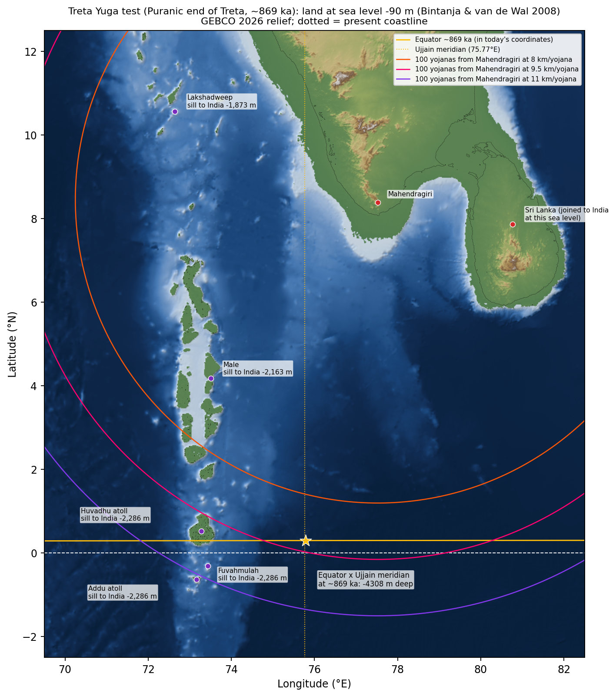
8.4 Every place moves with the plate, so the distances stay the same
The Markandeya Purana (ch. 57) names Mahendra and Malaya among the seven principal mountains of Bharatavarsha, and describes Bharatavarsha as nine divisions separated by the ocean. Mahendragiri, Kanyakumari, Ujjain, Sri Lanka, the Maldives and Chagos all ride the India plate. Over 869 kyr each moved ~50 km toward the south-west; the India–Capricorn diffuse boundary south of ~3°S adds at most 2 km at Chagos. Their distances from one another are therefore unchanged. What changes is where the equator crosses them: about 0.3° further north, in today's coordinates (Figure 7).
| Point | Today | At ~869 ka | Moved (km) |
|---|---|---|---|
| Mahendragiri | 8.3883°N, 77.5214°E | 8.0908°N, 77.1644°E | 51 |
| Kanyakumari | 8.0780°N, 77.5505°E | 7.7804°N, 77.1932°E | 51 |
| Ujjain | 23.1713°N, 75.7665°E | 22.8754°N, 75.4271°E | 48 |
| Huvadhu atoll | 0.5190°N, 73.2830°E | 0.2259°N, 72.9193°E | 52 |
| Addu atoll | 0.6360°S, 73.1610°E | 0.9289°S, 72.7959°E | 52 |
| Diego Garcia | 7.3200°S, 72.4200°E | 7.6120°S, 72.0460°E | 52 |
| Great Chagos Bank | 6.2000°S, 71.9000°E | 6.4913°S, 71.5272°E | 52 |
| Sri Lanka (centre) | 7.8731°N, 80.7718°E | 7.5732°N, 80.4120°E | 52 |
| Distance | Today (km) | At ~869 ka (km) |
|---|---|---|
| Mahendragiri - Huvadhu atoll | 993.0 | 993.0 |
| Mahendragiri - Addu atoll | 1,113.8 | 1,113.8 |
| Kanyakumari - Diego Garcia | 1,804.2 | 1,804.2 |
| Mahendragiri - Sri Lanka (centre) | 362.4 | 362.4 |
The southern end of India at the Treta sea level. With the sea 90 m lower, India and Sri Lanka formed one landmass. Its southern tip was at 5.8350°N, 80.1980°E (southern Sri Lanka), 384 km from Kanyakumari. On the Indian side the broad Wadge Bank shelf south of Cape Comorin emerged too, so the cape itself moved 83 km south-west, to 7.4100°N, 77.2150°E. The open-sea gap from that coast to each ridge landmass, and the yojana it implies if the gap is 100 yojanas:
| To | Sea gap from the Treta-era Indian coast (km) | km per yojana |
|---|---|---|
| Lakshadweep (Kavaratti) | 259 | 2.6 |
| Male | 491 | 4.9 |
| Huvadhu atoll | 837 | 8.4 |
| Great Chagos Bank | 1,525 | 15.2 |
8.5 Axial tilt and the 'gravitational pole' (true polar wander)
Tilt. The Berger & Loutre (1991) orbital solution gives an obliquity of 23.75° at 869 ka (today 23.45°; range 22.1–24.5° over the last 1 Myr). Obliquity is the angle between the spin axis and the orbit. It moves the tropics (then at ±23.75°) but not the equator or any meridian, which are fixed by where the spin axis pierces the crust. The equinox Sun passes overhead on the equator whatever the tilt.
True polar wander. The crust can rotate relative to the spin axis as mass is redistributed. The test below moved the pole by up to 4° toward every azimuth. For each case it rebuilt the equator and Ujjain's meridian, found where they cross, carried that point to today's coordinates and read its depth in GEBCO. The table shows the shallowest result for each amount of wander:
| Pole shift | Rate over 869 kyr | Shallowest crossing | Depth | Ever land? |
|---|---|---|---|---|
| 0.25° | 0.3°/Myr | 0.5160°N, 75.8410°E | 3,920 m | no |
| 0.50° | 0.6°/Myr | 0.1890°N, 75.9980°E | 3,993 m | no |
| 1.00° | 1.2°/Myr | 1.2000°N, 75.6170°E | 3,576 m | no |
| 1.50° | 1.7°/Myr | 1.3190°N, 75.3470°E | 3,246 m | no |
| 2.00° | 2.3°/Myr | 1.1500°N, 75.0540°E | 2,884 m | no |
| 3.00° | 3.5°/Myr | 2.3580°N, 74.9480°E | 2,243 m | no |
| 4.00° | 4.6°/Myr | 2.0490°N, 74.3810°E | 1,255 m | no |
The crossing reaches seabed that was ever dry only with 5.3° of wander toward 164°E, about 6° per million years. Palaeomagnetic estimates of true polar wander over the Cenozoic are generally well under 1°/Myr (Besse & Courtillot 2002; Torsvik et al. 2012). Today's measured polar drift is ~1°/Myr, mostly glacial rebound, and points toward ~75–80°W, which moves the crossing north–south along the meridian, not toward the Maldives.
8.6 Scan of the Chagos–Laccadive ridge: what was land and is now gone
Every bank shallower than −200 m between 10°S and 3°N was inventoried. GEBCO's 15″ cells show spurious "land" up to ~200 m on reefs (Pitt Bank, which has no land at all, shows 156 m). Bank tops were therefore capped at +3 m, and present-day land is taken from published figures where available (Chagos as a whole: 56 km², Diego Garcia 32.5 km²). Drowning ages come from the sea-level curve of Section 4.
| Bank | Centroid | Land at −90 m (km²) | at −40 m (~10 ka) | at −20 m (~8.8 ka) | at −10 m (~8 ka) | Today (km²) | Drowned | Status |
|---|---|---|---|---|---|---|---|---|
| Great Chagos Bank / Egmont Islands | 6.2220°S, 72.0270°E | 14,551 | 11,383 | 4,134 | 590 | 5.6 | ~8.1 ka | drowned: 95% or more of its glacial-era land is now under water |
| Huvadhu atoll | 0.5190°N, 73.2830°E | 3,741 | 2,794 | 1,797 | 1,236 | 314.9 (GEBCO, overstated) | islets remain | partly drowned: reef islets remain on a once larger plateau |
| Pitt Bank | 7.1080°S, 71.2870°E | 2,181 | 1,974 | 528 | 154 | 0.0 | ~7.3 ka | drowned: 95% or more of its glacial-era land is now under water |
| unnamed bank 2.38, 73.10 | 2.3800°N, 73.1040°E | 1,934 | 1,219 | 848 | 520 | 45.5 (GEBCO, overstated) | islets remain | drowned: 95% or more of its glacial-era land is now under water |
| Laamu / Thaa atolls | 1.9370°N, 73.4150°E | 1,078 | 794 | 574 | 445 | 61.8 (GEBCO, overstated) | islets remain | partly drowned: reef islets remain on a once larger plateau |
| Peros Banhos | 5.3080°S, 71.8240°E | 1,019 | 865 | 577 | 240 | 20.5 (GEBCO, overstated) | islets remain | drowned: 95% or more of its glacial-era land is now under water |
| Speakers Bank | 4.9300°S, 72.3240°E | 983 | 844 | 376 | 39 | 0.0 | ~8.1 ka | drowned: 95% or more of its glacial-era land is now under water |
| Diego Garcia | 7.3280°S, 72.4390°E | 261 | 245 | 222 | 136 | 32.5 | islets remain | partly drowned: reef islets remain on a once larger plateau |
| Addu atoll | 0.6360°S, 73.1600°E | 207 | 185 | 139 | 116 | 19.3 (GEBCO, overstated) | islets remain | partly drowned: reef islets remain on a once larger plateau |
| Salomon Islands / Blenheim Reef | 5.2110°S, 72.4560°E | 189 | 152 | 121 | 97 | 16.5 (GEBCO, overstated) | islets remain | partly drowned: reef islets remain on a once larger plateau |
Seamounts. 665 submerged peaks with ≥ 500 m relief and summits between −150 and −3,000 m. The shallowest would have needed the subsidence rates shown to have been islands at the deepest glacial sea level (the ridge subsides at ~25 m/Myr):
| Summit | Summit depth | Relief (m) | Subsidence needed (m/Myr) |
|---|---|---|---|
| 5.1810°S, 72.6400°E | 153 m | 2,503 | 29 |
| 5.7310°S, 71.3900°E | 156 m | 3,501 | 32 |
| 5.3480°S, 72.6480°E | 180 m | 2,676 | 60 |
| 4.4310°S, 72.7900°E | 204 m | 2,655 | 87 |
| 8.8480°S, 70.2560°E | 207 m | 2,619 | 91 |
| 7.7560°S, 71.3480°E | 213 m | 1,686 | 98 |
Crater-like basins. Priority-flood filling found 570 closed basins larger than 20 km² and deeper than 20 m. 27 are atoll lagoons (reef-rimmed basins on bank tops); the rest are abyssal basins at 3.7–5 km depth, of which 23 of the 98 largest are elongated roughly north–south, the grain of the fracture zones here. 4 are near-circular:
| Centre | Area (km²) | Radius (km) | Rim depth (m) | Depth below rim (m) | Rim vs surroundings (m) |
|---|---|---|---|---|---|
| 0.3730°N, 70.2070°E | 2,009 | 25 | 4,001 | 466 | +32 |
| 1.0560°N, 70.2920°E | 1,586 | 22 | 4,095 | 459 | +75 |
| 9.5070°S, 74.7280°E | 234 | 9 | 5,141 | 81 | -20 |
| 6.2860°S, 70.7030°E | 208 | 8 | 3,714 | 162 | -291 |
Two of these (near 0.4°N 70.2°E and 1.1°N 70.3°E) have margins slightly raised (+32 to +75 m), which is crater-like in shape. Both sit on the abyssal floor 4 km down, 300 km west of the ridge, so they cannot be where an island stood. Across this region GEBCO depths are largely interpolated from satellite gravity, so features of this size need a ship survey before they can be called anything.
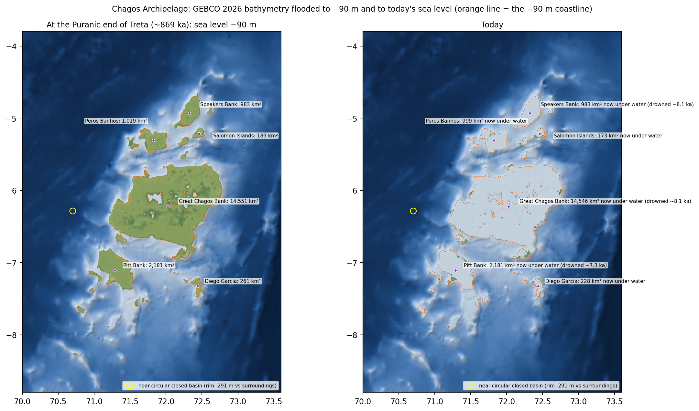
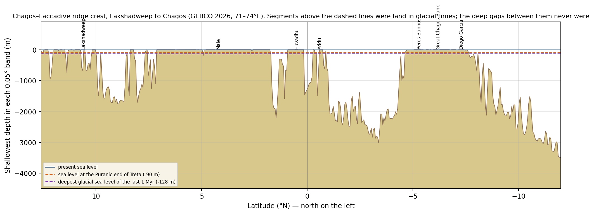
8.7 Lemuria, Kumari Kandam and Mauritius
Where the ideas come from. "Lemuria" was proposed in 1864 by the zoologist Philip Sclater. He wanted a sunken land bridge to explain why lemur-like primates lived in Madagascar and South Asia. Continental drift made it unnecessary: India and Madagascar were once joined and separated about 88 million years ago. Tamil tradition separately remembers Pandya lands south of Kumari lost to the sea, among them Kapatapuram and the older Madurai. In the 19th and 20th centuries the two ideas were merged as "Kumari Kandam" (Ramaswamy 2004). Some readers link Valmiki's "golden gate (kavāṭa) of the Pandyas" (Kishkindha 41.19) to Kapatapuram by its name. For the historical edition the sea stood near today's level and none of this land existed. The −90 m and −128 m columns show what the Treta and glacial readings would add.
Kumari Kandam on the data. The land south of India and around Sri Lanka that is sea today but was dry at low sea level (GEBCO 2026):
| At −90 m (end of Treta) | At −128 m (ice-age low) | |
|---|---|---|
| Land of South India and Sri Lanka now under the sea | 92,688 km² | 100,025 km² |
| of which the Palk Bay and Strait | 26,256 km² | 26,885 km² |
| of which south of Kanyakumari (Wadge Bank) | 8,636 km² | 10,871 km² |
| Southernmost dry land below Kanyakumari | 7.41°N | 7.35°N |
Beyond that shelf the sea floor falls away fast:
| Directly south of Kanyakumari | Depth today |
|---|---|
| 7.0°N, 77.5°E | 889 m |
| 6.0°N, 77.5°E | 2,372 m |
| 5.0°N, 77.5°E | 2,788 m |
| 3.0°N, 77.5°E | 3,948 m |
| 0.0°N, 77.5°E | 4,763 m |
Lemuria on the data. At the lowest sea level of the last million years, the whole Chagos–Laccadive ridge held 52,033 km² of land in 76 separate pieces. The Mascarene banks added about 55,082 km² at the same sea level (table below). Between them the open ocean has a median depth of 3,926 m. Between the Mascarene banks and Chagos the floor never rises above 3,752 m, and between India and the Maldives above 2,592 m. That is an archipelago of drowned limestone banks, not a continent.
Mauritius. Mauritius lies west of the GEBCO subset, so it was tested on NOAA ETOPO 2022 (1′). The banks of the Mascarene Plateau were large islands at low sea level. Mauritius and Réunion, steep volcanoes, barely change.
| Island or bank | Land today (km²) | at −90 m | at −128 m | km from Mahendragiri | km per yojana if 100 | km from equator | km from Ujjain's meridian |
|---|---|---|---|---|---|---|---|
| Mauritius | 1,865 | 2,797 | 2,930 | 3,804 | 38 | 2,248 | 1,895 |
| Reunion | 2,512 | 2,854 | 2,893 | 4,039 | 40 | 2,349 | 2,100 |
| Rodrigues | 108 | 992 | 1,038 | 3,469 | 35 | 2,195 | 1,302 |
| Saya de Malha Bank | 0 | 18,450 | 29,220 | 2,655 | 27 | 1,176 | 1,593 |
| Nazareth Bank | 0 | 15,027 | 19,158 | 3,049 | 30 | 1,621 | 1,630 |
| Cargados Carajos (St Brandon) | 1.3 | 5,569 | 6,704 | 3,310 | 33 | 1,818 | 1,722 |
| Clue | Mauritius |
|---|---|
| On the equator | ✘ 2,248 km south of it (20°S) |
| On Ujjain's meridian | ✘ 1,895 km west of it |
| 100 yojanas from Mahendra | ✘ needs a 38-km yojana, three times any traditional value |
| An island across the sea | ✔ |
| A mountain (Trikuta) | ✔ volcanic peaks to 828 m; the three-peaked Trois Mamelles is a coincidence of shape (a French colonial name) |
| A Setu of trees and rocks | ✘ the sea between it and India is never shallower than 3,752 m |
The real lost continent. Zircon grains 660 million to over 3 billion years old, found in Mauritian sand and lava, show that a fragment of ancient continental crust, named Mauritia, lies buried beneath Mauritius and the Mascarene Plateau (Torsvik et al. 2013; Ashwal et al. 2017). It broke away from Madagascar between 84 and 61 million years ago and was buried by hotspot lavas; Mauritius itself is less than 9 million years old. So the Indian Ocean does hide a sunken piece of continent. It sank tens of millions of years before any human lived, and it lies 3,800 km from Mahendragiri at 20°S.
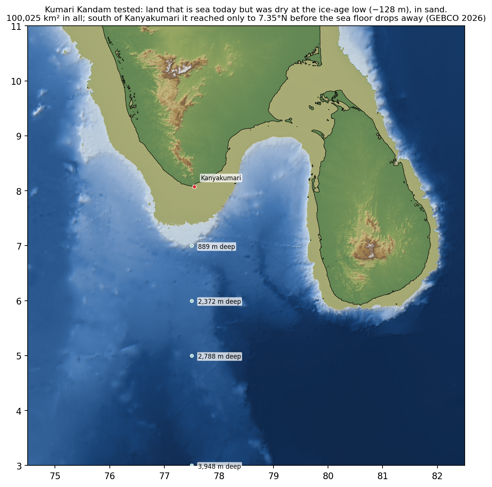
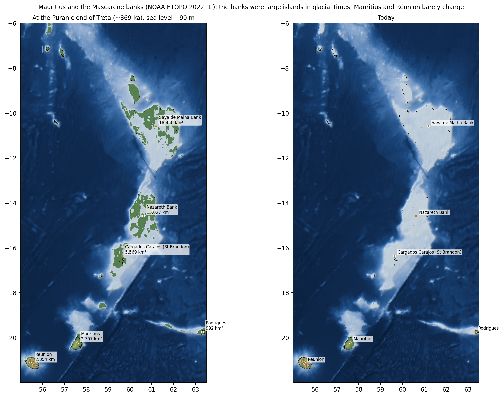
9. Limits
- GEBCO 2026 is a 15″ (~460 m) grid. In the Palk Strait it rests on charts and interpolation, and depths are integer metres. The −3 m sill is good to about ±1–2 m; narrow spits such as Dhanushkodi are not resolved. On land GEBCO uses SRTM-class elevations (±5 m), too coarse for 1–2 m palaeo-shorelines.
- Sea level: the regional RSL model has ±1–3 m uncertainty in the early-to-mid Holocene, and the sand cays of Adam's Bridge are mobile Holocene deposits. The present crest is not necessarily the crest of 7,000 years ago.
- Ephemeris: DE441's lunar position at 5000 BCE is uncertain by roughly 0.3° through tidal acceleration. ΔT is uncertain by hours to a day, so the Cancer lagna (local time) cannot be checked. None of the sign- or nakshatra-level results above depend on ΔT.
- Text: verse numbering is IITK/RSVP (southern vulgate). "Absent from the CE" means absent from the constituted text, without the critical apparatus.
- Sri Lankan "Ramayana trail" sites are post-Valmiki local traditions. They are shown for reference, not as evidence.
10. Files
data/valmiki_places.kml: open in Google Earth (placemarks and route).data/valmiki_places.geojson,data/valmiki_places.csv: the same data for GIS / Excel.data/*.json: every intermediate result (sill, Setu shape, ephemeris search, season test …).scripts/: the full pipeline;python scripts/run_all.pyrebuilds everything. It needs JPL DE441 part 1 (1.65 GB, https://naif.jpl.nasa.gov/pub/naif/generic_kernels/spk/planets/de441_part-1.bsp) inephemeris/or at the path in theDE441_BSPenvironment variable, plus Python with numpy, scipy, matplotlib and jplephem.
11. Sources
- GEBCO Compilation Group (2026) GEBCO 2026 Grid (doi: 10.5285/4f68d5c7-45eb-f999-e063-7086abc036fa). Public domain; not for navigation.
- Park, R. S., Folkner, W. M., Williams, J. G., Boggs, D. H. (2021) The JPL Planetary and Lunar Ephemerides DE440 and DE441. AJ 161:105. doi:10.3847/1538-3881/abd414.
- van Leeuwen, F. (2007) Validation of the new Hipparcos reduction. A&A 474:653 (Spica position and proper motion).
- Lambeck, K., Rouby, H., Purcell, A., Sun, Y., Sambridge, M. (2014) Sea level and global ice volumes from the LGM to the Holocene. PNAS 111:15296. doi:10.1073/pnas.1411762111. (1-kyr values via the CRAN 'tabs' dataset; Table S3 not retrieved.)
- Ranasinghe, Ambillapitiya, Li, Shen, Ranasinghe & Liu (2025) Quaternary Science Reviews 362:109403. doi:10.1016/j.quascirev.2025.109403 (Sri Lanka mid-Holocene highstand; abstract).
- Banerjee, P. K. (2000) Holocene and Late Pleistocene relative sea level fluctuations along the east coast of India. Marine Geology 167:243. doi:10.1016/S0025-3227(00)00028-1 (abstract).
- Katupotha, J. (1988) Radiocarbon 30:125. doi:10.1017/S0033822200043964; Katupotha (c. 1995) NARESA report RG/92/E/01.
- Dubey, K. M., Chaubey, A. K., Gaur, A. S., Joglekar, M. V. (2023) Quaternary Research 111:166. doi:10.1017/qua.2022.41 (Palk Strait seismic study; abstract).
- Dandabathula, G. et al. (2024) ICESat-2 bathymetry of Adam's Bridge. Scientific Reports 14:14896. doi:10.1038/s41598-024-65908-2.
- Paul, A. (2021) Evolution of carbonate landforms, Gulf of Mannar. J. Indian Geomorphology 9:18-43.
- Arunachalam, B., Sukumar, B. et al. (2006) Reconstruction of the ancient port Korkai. Current Science 91(3):278-280.
- Sundaresh & Gaur, A. S. (2011) Marine archaeological explorations off Poompuhar (NIO).
- Argus, D. F., Gordon, R. G., DeMets, C. (2011) Geologically current motion of 56 plates relative to the no-net-rotation reference frame. G-cubed 12:Q11001. doi:10.1029/2011GC003751.
- Altamimi, Z. et al. (2023) ITRF2020 plate motion model. GRL 50:e2023GL106373. doi:10.1029/2023GL106373.
- Jade, S. et al. (2017) Scientific Reports 7:11439. doi:10.1038/s41598-017-11697-w (rigid India incl. Sri Lanka).
- Morrison, L. V., Stephenson, F. R. (2004) J. Hist. Astron. 35:327; Stephenson, Morrison & Hohenkerk (2016) Proc. R. Soc. A 472:20160404.
- NIH Roorkee for CWC (2013) Morphological study of the Ghaghara; Gautam et al. (2024) Arab. J. Geosci. doi:10.1007/s12517-024-12104-1.
- Agrawal, D. P., Bhandari, N., Lal, B. B., Singhvi, A. K. (1981) Proc. Indian Acad. Sci. (EPS) 90:161 (Shringaverapura TL dates).
- Kale, V. S., Rajaguru, S. N. (1987) Nature 325:612 (Godavari).
- Valmiki Ramayana, RSVP text and translation via IIT Kanpur: https://heritage.iitk.ac.in/VRAM/ (API /api/VRAM/); valmikiramayan.net.
- Ramayana Critical Edition (Baroda), constituted text, GRETIL: https://gretil.sub.uni-goettingen.de/ (Tokunaga / Smith).
- Goldman, R. P. (trans.), Ramayana Book I notes (Clay Sanskrit Library): horoscope = star passage 506*.
- Weber, A. (1872) Indian Antiquary 1 (horoscope absent from the Bengal recension); Mak, B. (2023) on the Yavanajataka's date.
- Claims tested: Bhatnagar, P. (2004) Dating the Era of Lord Ram (10 Jan 5114 BCE); Oak, N. (2014) The Historic Rama (c. 12,209 BCE); Kibe, M. V. (Amarkantak Lanka).
- Bintanja, R., van de Wal, R. S. W. (2008) North American ice-sheet dynamics and the onset of 100,000-year glacial cycles. Nature 454:869 (3-Myr sea level; NOAA WDC Paleo #2011-119).
- Spratt, R. M., Lisiecki, L. E. (2016) A Late Pleistocene sea level stack. Climate of the Past 12:1079 (0-798 ka cross-check).
- Stein, C. A., Stein, S. (1992) A model for the global variation in oceanic depth and heat flow with lithospheric age. Nature 359:123 (ridge subsidence form).
- Pappu, S. et al. (2011) Early Pleistocene presence of Acheulian hominins in South India. Science 331:1596.
- Manusmriti 1.69-71 and Mahabharata 3.186 (12,000-year yuga cycle); Surya Siddhanta 1.15-17 (4,320,000-year maha-yuga; Lanka at the equator on Ujjain's meridian).
- Anonymous (1926) Situation of Ravana's Lamka on the Equator. Quarterly Journal of the Mythic Society 17(1).
- Berger, A., Loutre, M. F. (1991) Insolation values for the climate of the last 10 million years. Quaternary Science Reviews 10:297 (obliquity; NOAA orbit91 file).
- Besse, J., Courtillot, V. (2002) Apparent and true polar wander and the geometry of the geomagnetic field over the last 200 Myr. JGR 107(B11):2300; Torsvik, T. H. et al. (2012) Phanerozoic polar wander, palaeogeography and dynamics. Earth-Science Reviews 114:325.
- DeMets, C., Gordon, R. G., Royer, J.-Y. (2005) Motion between the Indian, Capricorn and Somalian plates. GJI 161:445 (India-Capricorn diffuse boundary).
- Wikipedia: Great Chagos Bank (12,642 km2 structure, ~5.6 km2 of land), Pitt Bank (wholly submerged), Speakers Bank (negligible land), Chagos Archipelago (56.13 km2 land; Diego Garcia 32.5 km2).
- Markandeya Purana ch. 57: Bharatavarsha in nine divisions separated by the ocean; seven kula-parvatas incl. Mahendra and Malaya (Sanskrit text via vedapath.app / enjoylearningsanskrit.com).
- NOAA NCEI (2022) ETOPO 2022 15 Arc-Second Global Relief Model. doi:10.25921/fd45-gt74 (Mauritius and Mascarene subset via ERDDAP).
- Torsvik, T. H. et al. (2013) A Precambrian microcontinent in the Indian Ocean. Nature Geoscience 6:223 (Mauritia).
- Ashwal, L. D., Wiedenbeck, M., Torsvik, T. H. (2017) Archaean zircons in Miocene oceanic hotspot rocks establish ancient continental crust beneath Mauritius. Nature Communications 8:14086.
- Sclater, P. L. (1864) The mammals of Madagascar. Quarterly Journal of Science 1:213 (the 'Lemuria' proposal).
- Ramaswamy, S. (2004) The Lost Land of Lemuria: Fabulous Geographies, Catastrophic Histories. University of California Press.
- Site coordinates: Wikipedia ({{coord}}), OpenStreetMap (Nominatim), district government (nic.in) pages, as listed per place.